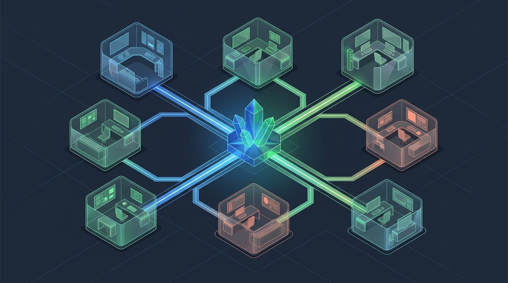

Write repo instructions, portable SKILL.md playbooks, and MCP server configs once so every developer on your team gets identical agent behavior across Cursor, Claude Code, Codex, Copilot, Windsurf/Devin, OpenCode, and Antigravity.

AGENTS.md and nested package overrides, backed by thin shims so zero rules are ever duplicated..agents/skills/ folders with YAML triggers, scripts, and references.stdio and remote Streamable HTTP MCP servers via env-var expansion, OAuth 2.1, and automated client sync.
Modern engineering teams rarely standardize on a single AI IDE: backend engineers run Claude Code or Codex CLI in the terminal, frontend teams use Cursor or Windsurf/Devin, enterprise squads run GitHub Copilot, and open-source or Gemini-native builders use OpenCode and Antigravity. Under the Linux Foundation’s Agentic AI Foundation (AAIF), three open standards—AGENTS.md, SKILL.md, and MCP—now eliminate vendor lock-in.
AGENTS.md is always loaded into session context. Keep it lean (500–2,000 tokens): repo map, build/test commands, non-negotiable invariants.
SKILL.md (donated to AAIF Oct 2026) loads only YAML metadata at boot. Multi-step procedures, scripts, and references load only when matched.
MCP connects agents to live databases, issue trackers, and docs. Commit a secret-free .mcp.json and inject tokens via env vars or OAuth 2.1.
AGENTS.md) from lazy-loaded procedures (SKILL.md) and live APIs (MCP) cuts baseline prompt bloat by 60–80% while guaranteeing uniform behavior across every developer’s chosen IDE.
Every major coding agent now supports AGENTS.md and the open SKILL.md format, but each harness still has distinct precedence rules, scoped-rule syntax, and MCP config keys. Use this verified late-2026 reference matrix before designing your repo’s portability layer.
| Tool / Harness | Instructions & Precedence | SKILL.md Discovery Paths | MCP Config Path & Key Quirks |
|---|---|---|---|
| Claude Code Thin Shim |
1. CLAUDE.md (highest)2. AGENTS.md (native in v2.1.277+ if no CLAUDE.md)3. .claude/rules/*.md (paths:) |
.claude/skills/.agents/skills/~/.claude/skills/ (global) |
Root .mcp.json (key: mcpServers, supports ${VAR} & ${VAR:-default}). Also reads user ~/.claude.json. |
| Cursor Native |
1. .cursor/rules/*.mdc (glob/always)2. AGENTS.md (root & nested)Legacy .cursorrules deprecated |
.agents/skills/.cursor/skills/.claude/skills/ (compat) |
.cursor/mcp.json (key: mcpServers, url for remote HTTP). Symlink or sync directly from root .mcp.json. |
| GitHub Copilot Native |
1. .github/copilot-instructions.md2. AGENTS.md (root & nested)3. .github/instructions/*.instructions.md (applyTo:) |
.agents/skills/.github/skills/.claude/skills/ (compat) |
Root .mcp.json (mcpServers, Nov 2026 Copilot/VS Code) or .vscode/mcp.json (key: servers + ${input:...}). |
| Codex CLI & Cloud Native |
1. AGENTS.override.md (local)2. AGENTS.md (root → nested dir chain, deepest wins) |
.agents/skills/.codex/skills/~/.agents/skills/ |
.codex/config.toml (TOML [mcp_servers.<name>] tables). Generate from canonical .mcp.json via sync script. |
| Windsurf / Devin Native |
1. AGENTS.md (Devin Local & Windsurf)2. .windsurf/rules/*.mdLegacy .windsurfrules deprecated |
.agents/skills/.windsurf/skills/Devin CLI skill loader |
~/.codeium/windsurf/mcp_config.json (mcpServers, uses serverUrl instead of url for remote HTTP). |
| OpenCode Native |
1. AGENTS.md (primary)2. CLAUDE.md (automatic fallback if AGENTS.md absent) |
.agents/skills/.opencode/skills/~/.config/opencode/skills/ |
Root opencode.json (key: mcp, uses type: "local" | "remote" and command: [...] array). Sync from .mcp.json. |
| Antigravity Native |
1. AGENTS.md (workspace)2. .agents/rules/ (glob/always)3. ~/.gemini/GEMINI.md (global) |
.agents/skills/ (workspace)~/.agent/skills/ (global) |
Root .mcp.json / Antigravity MCP config (key: mcpServers, native stdio & Streamable HTTP + OAuth). |
Notice the clear convergence across all seven harnesses in late 2026:
AGENTS.md at root + nested package dirs..agents/skills/<skill-name>/SKILL.md is now read natively by all 7 tools (zero symlink needed for skills!)..mcp.json with mcpServers is the de facto canonical source, with thin generated targets only for TOML/schema outliers (Codex, OpenCode, Windsurf).CLAUDE.md exists alongside AGENTS.md, Claude Code prioritizes CLAUDE.md. Fix: replace CLAUDE.md with a 1-line @AGENTS.md import or symlink..github/copilot-instructions.md and AGENTS.md contain full rules, Copilot injects both and wastes context.serverUrl: Copying a remote MCP block with "url" into Windsurf silently fails unless mapped to "serverUrl"..cursor/rules/, .windsurf/rules/, .github/copilot-instructions.md). Keep 100% of team knowledge in AGENTS.md, .agents/skills/, and .mcp.json, and treat tool-specific files strictly as thin pointers or CI-generated projections.
A portable repository looks boring on purpose. Every harness finds its expected entry point immediately, while human maintainers only ever edit three canonical locations. Explore the 7-pin layout below to see how symlinks and thin wrappers bridge all seven IDEs.
@AGENTS.md) instead of OS symlinks if any contributor develops on Windows without Developer Mode.ln -s AGENTS.md CLAUDE.md) work cleanly across CI and containers..mcp.json → .cursor/mcp.json (symlink).mcp.json → .codex/config.toml (script).mcp.json → opencode.json (script).mcp.json → mcp_config.json (url→serverUrl)AGENTS.override.md & CLAUDE.local.md.env, .mcp.local.json, OAuth token caches1 Root AGENTS.md: Canonical architecture map, exact test/lint commands, branch naming, and repo-wide invariants. Read natively by all 7 harnesses.
2 Thin CLAUDE.md Shim: Contains only @AGENTS.md (Claude Code native file import). Guarantees older/enterprise Claude Code builds never miss root rules.
3 Canonical .mcp.json: Declares shared team MCP servers with ${ENV_VAR} placeholders and remote Streamable HTTP URLs. Zero plaintext API keys.
4 .agents/skills/ Vault: AAIF-standard directory auto-discovered by Claude Code, Cursor, Copilot, Codex, Windsurf/Devin, OpenCode, and Antigravity.
5 Glob-Only IDE Extensions: Keep .cursor/rules/*.mdc or .claude/rules/*.md strictly for file-pattern-triggered micro-rules that cannot be expressed by directory nesting.
6 CODEOWNERS & CI Gate: Route edits to AGENTS.md, .agents/skills/, and .mcp.json through Staff/Security review and run automated token + schema linters.
7 Nested Package AGENTS.md: Sub-directory deltas (e.g., packages/api/AGENTS.md) load only when an agent edits files inside that package, keeping root context small.
AGENTS.md & Thin-Shim Patterns
Think of README.md as onboarding for humans and AGENTS.md as an executable contract for machines. In a monorepo, stuffing every framework quirk into the root file degrades agent accuracy. Instead, pair a lean root contract with directory-scoped child AGENTS.md files.
AGENTS.md defines universal invariants; child files in packages/api/ or apps/web/ add local commands and overrides only when the agent enters that subtree.
install, typecheck, test, and lint commands (prefer single-file test flags).db/ from ui/”)..agents/skills/ and deep docs (never inline them).When an agent opens packages/payments/ledger.ts, harnesses walk upward from the file to the repo root, merging context with nearest-file precedence:
# packages/payments/AGENTS.md (Delta Only)
## Local Commands
- Test single file: `pnpm --filter payments test <file>`
## Non-Negotiable Rules
- Use integer cents (`bigint`); NEVER use JS `number` floats.
- All ledger mutations require an idempotency key header.Result: Frontend engineers editing apps/web/ never pay the token cost of payments rules.
CLAUDE.md)@AGENTS.md
# Claude-specific hooks only:
# Run `/compact` after 40 turns..github/copilot-instructions.md)Read and strictly follow the root
`AGENTS.md` and nearest nested
`AGENTS.md` for all repo rules..cursor/rules/sql.mdc)---
globs: ["**/*.sql"]
---
Follow `packages/db/AGENTS.md`.pnpm vitest run path/to/test.ts and pnpm tsc --noEmit; zero warnings allowed”). Agents verify concrete commands 3–4× more reliably than stylistic adjectives.
SKILL.md Progressive-Disclosure FormulaDonated to the Linux Foundation’s AAIF in October 2026 and supported by 70+ platforms (Claude Code, Codex, Cursor, Copilot, Windsurf/Devin, OpenCode, Antigravity), Agent Skills solve context bloat via 3-tier progressive disclosure: agents see only a 2-line YAML summary at boot, loading full instructions and helper scripts only when a task matches.
SKILL.md AnatomyOnly name (lowercase kebab-case) and description are universally portable. Write trigger-rich descriptions naming exact file paths and intents.
Numbered, imperative steps (<300 lines). Each step produces a verifiable artifact or state transition before moving to the next.
Deterministic Python/Bash/Node validators bundled inside the skill folder. Offload brittle regex/schema checks from the LLM to code.
Deep domain docs, API schemas, or checklists kept in sibling markdown files. Loaded only when the agent reaches that step—never bloating the core prompt.
Explicit “NEVER” rules and human-in-the-loop escalation triggers. Prevents autonomous agents from executing destructive commands.
| Loading Tier | What Loads Into Context | Token Cost | Cross-IDE Portability Note |
|---|---|---|---|
| Tier 1: Boot | YAML name + description |
~30–60 tok / skill | Always visible in system prompt. Keep description under 250 chars for clean matching. |
| Tier 2: Trigger | Full SKILL.md body |
~400–1,800 tok | Triggered by intent match or explicit /skill-name. Avoid tool-only frontmatter like context: fork unless optional. |
| Tier 3: Execution | scripts/, references/, assets/ |
0 tok until read/run | Use relative paths from the skill folder. Scripts must use standard runtimes (python3, node, bash). |
allowed-tools, model, and context: fork, while Codex CLI ignores unknown keys and does not load legacy plugin commands. Stick to name and description for core behavior, and treat vendor extensions strictly as progressive enhancements.
The Model Context Protocol (MCP) gives every IDE identical live access to GitHub, Postgres, Linear, Sentry, and internal docs. The #1 cross-IDE friction point in 2026 is not MCP itself—it is divergent client config schemas and hardcoded API tokens accidentally pushed to git.
.mcp.json{
"mcpServers": {
"github": {
"type": "http",
"url": "https://api.githubcopilot.com/mcp/",
"headers": {
"Authorization": "Bearer ${GITHUB_MCP_TOKEN}"
}
},
"postgres-ro": {
"command": "npx",
"args": ["-y", "@modelcontextprotocol/server-postgres@0.6.2"],
"env": {
"POSTGRES_URL": "${DEV_PG_READONLY_URL}"
}
},
"context-docs": {
"type": "http",
"url": "https://mcp.internal.acme.dev/v1"
}
}
}stdio vs. Remote Streamable HTTP| Dimension | Local stdio |
Streamable HTTP |
|---|---|---|
| Auth Model | Local env vars / CLI creds | OAuth 2.1 / SSO + Bearer |
| Onboarding | Needs Node/Python/Docker | Zero local install (URL only) |
| Audit & RBAC | Per-laptop; hard to revoke | Central gateway & logs |
| Best For | Local DBs, filesystem, git | Jira, GitHub, Sentry, prod docs |
stdio wrappers for SaaS tools. Developers authenticate via browser OAuth 2.1—meaning zero static API tokens ever touch laptops or config files.
| Client | Config File | Root Key | Schema Delta & Sync Strategy |
|---|---|---|---|
| Claude Code / Antigravity | .mcp.json |
mcpServers |
Canonical source! Native ${VAR} and ${VAR:-fallback} expansion. |
| Cursor | .cursor/mcp.json |
mcpServers |
Symlink directly to ../.mcp.json (identical JSON schema). |
| VS Code / Copilot | .mcp.json or .vscode/mcp.json |
mcpServers / servers |
Late-2026 Copilot reads root .mcp.json; use .vscode/mcp.json only if you need interactive ${input:token} prompts. |
| Codex CLI | .codex/config.toml |
[mcp_servers.*] |
Run pnpm mcp:sync to emit TOML from .mcp.json (auto-checked in CI). |
| Windsurf / OpenCode | mcp_config.json / opencode.json |
mcpServers / mcp |
Sync script maps url → serverUrl (Windsurf) and type: "remote" (OpenCode). |
.env.example with blank vars; load real values via direnv, 1Password CLI, or OAuth 2.1.npx -y pkg@x.y.z or Docker digests to block supply-chain hijacks.gitleaks on .mcp.json and all generated client configs.Connecting 10+ MCP servers can inject 150–300 tool schemas into every turn, degrading tool selection accuracy and hitting client caps (e.g., VS Code’s 128-tool limit).
Fix: Cap workspace .mcp.json at 3–5 high-signal servers (or use an MCP gateway/router that filters toolsets per role).
Instruction files decay faster than code. Every time an engineer patches a bug by appending “NEVER do X” to CLAUDE.md without updating AGENTS.md, or dumps a 4,000-token style guide into the root prompt, agent compliance drops sharply. Treat agent instructions like production code: budget them, lint them, and prune them in CI.
AGENTS.md contracts, modular SKILL.md playbooks, and schema-verified MCP configs.
| Artifact | Target Budget | CI Hard Cap | Overflow Action (When Cap Is Hit) |
|---|---|---|---|
Root AGENTS.md |
500–1,500 tok | 2,000 tok (~150 lines) | Move step-by-step workflows to .agents/skills/; move pkg rules to nested AGENTS.md. |
Nested AGENTS.md |
150–500 tok | 800 tok (~60 lines) | Delete rules already enforced by ESLint/Ruff/Go vet; link to docs/. |
SKILL.md Frontmatter |
25–50 tok | 75 tok (≤250 chars) | Tighten description to crisp trigger verbs + exact target paths. |
SKILL.md Body |
400–1,200 tok | 2,500 tok (~300 lines) | Extract reference tables into references/ and validators into scripts/. |
AGENTS.md, CLAUDE.md, and .cursor/rules/ guarantees divergence within 2 weeks.npm run test:old commands causes every agent to burn 3+ turns failing before guessing.AGENTS.md exceeds 2,000 tokens or 150 lines.CLAUDE.md is either a symlink or ≤5 lines containing @AGENTS.md.name matches folder, description present, no unreferenced scripts).AGENTS.md exists in git..mcp.json and contain zero raw tokens.Drop these five battle-tested templates directly into any repository to achieve immediate cross-IDE parity across Cursor, Claude Code, Codex, Copilot, Windsurf/Devin, OpenCode, and Antigravity.
| # | Recipe | File Path | Problem Solved |
|---|---|---|---|
| 1 | Lean Root Contract | AGENTS.md | Gives all 7 harnesses identical build, test, and boundary rules. |
| 2 | Zero-Drift Claude Shim | CLAUDE.md | Prevents Claude Code from shadowing or missing AGENTS.md. |
| 3 | Portable PR Review Skill | .agents/skills/pr-review/SKILL.md | On-demand security & diff review playbook with deterministic script. |
| 4 | Client MCP Sync Script | scripts/sync-mcp.mjs | Generates Codex TOML & Windsurf serverUrl from .mcp.json. |
| 5 | GitHub Actions Lint Gate | .github/workflows/agent-lint.yml | Blocks bloated rules, broken YAML, or unpinned MCP servers in PRs. |
AGENTS.md# AGENTS.md — Acme Platform
## Repo Map
- `apps/web/`: Next.js 16 frontend (pnpm)
- `packages/api/`: Go 1.24 REST/gRPC services
- `packages/db/`: SQL migrations (see local AGENTS.md)
## Verification Commands (Run Before Finishing)
- Typecheck: `pnpm -r typecheck`
- Fast unit test: `pnpm --filter <pkg> test <file>`
- Go check: `cd packages/api && go test ./...`
## Hard Invariants
- Never commit secrets or edit `.env*` files.
- Never bypass ESLint/golangci-lint with ignore comments.
- Use `.agents/skills/` for migrations & release notes.CLAUDE.md Shim@AGENTS.md
<!-- Keep all shared rules in AGENTS.md.
Only Claude-specific local hooks belong below. -->SKILL.md---
name: pr-readiness-check
description: Audit staged diffs for security leaks, missing tests, and breaking API changes before opening a PR.
---
# PR Readiness Check
1. Run `git diff --staged --stat` to list touched packages.
2. Execute `python3 scripts/scan_diff.py` for secret/TODO checks.
3. Verify each modified module has a passing targeted test.
4. Summarize risks in 3 bullets; NEVER auto-push to `main`.scripts/sync-mcp.mjs (Excerpt)import fs from "node:fs";
const cfg = JSON.parse(fs.readFileSync(".mcp.json", "utf8"));
// 1. Emit Codex .codex/config.toml
const toml = Object.entries(cfg.mcpServers).map(([k, v]) => {
const lines = [`[mcp_servers.${k}]`];
if (v.url) lines.push(`url = "${v.url}"`);
if (v.command) lines.push(`command = "${v.command}"`);
if (v.args) lines.push(`args = ${JSON.stringify(v.args)}`);
return lines.join("\n");
}).join("\n\n");
fs.mkdirSync(".codex", { recursive: true });
fs.writeFileSync(".codex/config.toml", toml + "\n");.github/workflows/agent-lint.ymlname: Agent Portability Lint
on: [pull_request]
jobs:
lint-agent-config:
runs-on: ubuntu-latest
steps:
- uses: actions/checkout@v4
- name: Enforce AGENTS.md line cap (<=150)
run: test "$(wc -l < AGENTS.md)" -le 150
- name: Verify CLAUDE.md thin shim
run: grep -q "@AGENTS.md" CLAUDE.md && test "$(wc -l < CLAUDE.md)" -le 8
- name: Validate SKILL.md YAML frontmatter
run: |
python3 -c '
import glob, yaml
for f in glob.glob(".agents/skills/*/SKILL.md"):
fm = yaml.safe_load(open(f).read().split("---")[1])
assert fm.get("name") and len(fm.get("description","")) <= 250, f
'
- name: Check MCP sync & no raw secrets
run: |
node scripts/sync-mcp.mjs && git diff --exit-code .codex/config.toml
! grep -E "(sk-|ghp_|xoxb-)" .mcp.jsonAGENTS.md, Third-Party Skills & MCP Tools
Because every AI coding agent treats AGENTS.md and SKILL.md as trusted system instructions—and executes bundled scripts/ with developer privileges—agent configs are now a Tier-1 supply-chain attack surface. A single poisoned community skill can exfiltrate ~/.ssh or .env secrets across all seven IDEs simultaneously.
Hidden Unicode (zero-width chars), HTML comments, or obfuscated base64 strings inside third-party SKILL.md or references/ files can instruct agents to curl secrets to attacker domains.
Installing unpinned skills via git pull or floating npx -y pkg@latest lets a compromised upstream maintainer inject malicious shell payloads overnight.
Granting write/admin tokens to MCP servers (or combining untrusted web-fetch MCP with local shell execution) creates a lethal “confused deputy” exfiltration path.
| Control Layer | Implementation Standard | Verification Mechanism |
|---|---|---|
CODEOWNERS Review |
Require Staff Engineer + AppSec approval on AGENTS.md, .agents/skills/**, and .mcp.json. |
GitHub Branch Protection “Require review from Code Owners” enforced on main. |
| Vendor & Pin Skills | Copy audited third-party skills into your repo’s .agents/skills/ (or internal private registry) pinned to a commit SHA. |
CI rejects dynamic runtime skill fetchers and logs SHA provenance in SKILL_LOCK.json. |
| Static Injection Scan | Reject invisible Unicode (U+200B..U+200F, bidi overrides), base64 blobs, and unapproved egress domains in Markdown/scripts. |
Pre-commit & CI regex/AST scanner across all *.md and .agents/skills/*/scripts/*. |
| Least-Privilege Tools | Scope MCP credentials to read-only or staging; restrict destructive shell commands via harness allowlists/sandboxes. | Quarterly token audit + OAuth 2.1 short-lived tokens via central MCP gateway. |
.github/CODEOWNERS Rule Block# Agent instructions & executable skills require dual review
/AGENTS.md @org/platform-eng @org/appsec
/**/AGENTS.md @org/platform-eng
/CLAUDE.md @org/platform-eng
/.mcp.json @org/platform-eng @org/appsec
/.agents/skills/ @org/platform-eng @org/appsec
/.cursor/rules/ @org/platform-engSKILL.md and references/ in raw text (inspect for HTML comments or hidden Unicode).scripts/ for network calls (curl, fetch, requests) and env access (os.environ).SKILL.md as Executable Code
When AGENTS.md, .agents/skills/, and .mcp.json flow through a single Git + CI pipeline, onboarding a new engineer or rolling out a new architectural rule takes one pull request—and instantly upgrades every local IDE and cloud coding agent simultaneously.
Inventory every .cursorrules, CLAUDE.md, .windsurfrules, and wiki doc. Distill only verified commands and invariants into a root AGENTS.md under 1,500 tokens. Replace old files with thin shims.
Move verbose procedures (DB migrations, PR review, service scaffolding) out of AGENTS.md into .agents/skills/*/SKILL.md with deterministic Python/Node validation scripts.
Create canonical .mcp.json with Streamable HTTP + OAuth 2.1 for SaaS tools and ${VAR} for local stdio servers. Wire up scripts/sync-mcp.mjs and symlink .cursor/mcp.json.
Enable agent-lint.yml and CODEOWNERS. Run one identical benchmark ticket across two different team IDEs (e.g., Cursor + Claude Code) and verify both run the exact same test command and pass CI.
AGENTS.md plus .agents/skills/ automatically. Local portability directly doubles your cloud-agent PR acceptance rate.
When an agent ignores a rule, misses a skill, or fails to boot an MCP server, the cause is almost always one of these seven deterministic configuration bugs.
| # | Symptom | Root Cause | Exact Fix |
|---|---|---|---|
| 1 | Claude Code ignores AGENTS.md |
Older build (<v2.1.277), disabled plugin, or stale CLAUDE.md shadowing it. |
Keep a 1-line CLAUDE.md containing @AGENTS.md and verify Project instructions in /config. |
| 2 | SKILL.md never auto-triggers |
Vague description in YAML frontmatter or folder name mismatch. |
Match folder name to YAML name; add explicit trigger verbs & target paths in description. |
| 3 | Windows dev sees broken symlink | Git symlinks checked out as plain text files without Windows Developer Mode. | Replace symlinks with 1-line text shims (@AGENTS.md) or run scripts/sync-mcp.mjs via postinstall. |
| 4 | Windsurf remote MCP silently fails | Config uses "url" instead of Windsurf’s "serverUrl" key. |
Map url → serverUrl in your MCP sync script when emitting Windsurf’s mcp_config.json. |
| 5 | Agent hallucinates old commands | Root AGENTS.md exceeds 2,500 tokens or retains outdated scripts. |
Prune root AGENTS.md under 1,500 tokens and add a CI dead-command check. |
| 6 | MCP tool calls degrade or hit cap | 10+ servers enabled globally, injecting 150+ schemas (hits VS Code 128 cap). | Trim workspace .mcp.json to 3–5 core servers or route through a scoped MCP gateway. |
| 7 | Agent violates nested package rule | Rule lives only in root .cursor/rules/ instead of package AGENTS.md. |
Move package-specific invariants to packages/<pkg>/AGENTS.md so all 7 harnesses inherit them. |
AGENTS.md: Under 1,500 tokens at repo root, with exact single-file test/lint commands and nested package deltas.CLAUDE.md imports @AGENTS.md; legacy .cursorrules and .windsurfrules deleted..agents/skills/ Layout: Repeatable workflows packaged with crisp YAML triggers, scripts/, and references/..mcp.json: Pinned package versions, Streamable HTTP + OAuth 2.1 where available, ${ENV_VAR} placeholders only.CODEOWNERS Active: Token caps, YAML validation, MCP client sync, and secret scanning block broken PRs automatically.AGENTS.md, SKILL.md, and secret-free MCP—can adopt tomorrow’s best coding harness in five minutes without rewriting a single rule.